Навигация: README | 01. Минимальный автомобиль | 02. Экстерьер, свет и мир | 03. Салон, приборка и камеры | 04. Зеркала и дворники | 05. Звуки и FMOD | 06. Комплектации, логика и шпаргалка
В этом модуле вы пройдёте весь минимально необходимый путь с нуля: подготовите и импортируете кузов и 4 колеса, назначите базовые материалы, подключите минимальную физику, соберёте Актор автомобиля с базовой камерой, оформите паспорт автомобиля (DA_*), соберёте .pak, протестируете его локально в City Car Driving 2.0 и узнаете, как опубликовать мод в Steam Workshop.
Что сознательно НЕ входит в Модуль 1:
Салон, зеркала, дворники, фары, номера, звуки, LogicBox и FuelTank не обязательны для запуска — игра заспавнит автомобиль и позволит на нём ездить и без них. Всё это вы сможете спокойно добавить позже в Модулях 2–6.
flowchart TD
S1["Шаг 1. Папка мода и файлы физики"] --> S2["Шаг 2. Экспорт 3D (кузов + 4 колеса)"]
S2 --> S3["Шаг 3. Импорт в UE 5.8 и базовые материалы"]
S3 --> S4["Шаг 4. Сборка Актора V_ModName<br/>(Body + 4 колеса + камера)"]
S4 --> S5["Шаг 5. Минимальные правки Vehicle.ini<br/>(Mount, Length, Radius)"]
S5 --> S6["Шаг 6. Паспорт авто DA_ModName<br/>(PDA_PrototypedVehicleSpecification)"]
S6 --> S7["Шаг 7. Сборка .pak, локальный тест<br/>и публикация в Steam Workshop"]
CityCarDriving2.uproject в Unreal Engine 5.8.Ctrl + Space), нажмите Settings (шестерёнка справа вверху) и включите Show Plugin Content (если ещё не включено).All → Plugins → Mods Content.MyFirstCar.MyFirstCar для порядка сразу создайте подпапки: Meshes, Materials, Textures.VehicleLib)MyFirstCar → Show in Explorer — откроется папка ...\Plugins\Mods\Content\MyFirstCar\ в Проводнике Windows.Docs\Samples\VehicleLibConfigs\Vehicle012_HangugEclauto\ (бензиновый седан, хороший универсальный старт)Docs\Samples\VehicleLibConfigs\Vehicle002_UlgaresGroberolf\Plugins\Mods\Content\CieBensVGruppe\ (полный привод, дизель).Plugins\Mods\Content\MyFirstCar\ три файла:
Vehicle.inioptions.xmlEngine.csv (если выбрали пример с другими именами .csv, скопируйте и их; если копировали из CieBensVGruppe, скопируйте также AwdAuto.xml и AwdManual.xml).Vehicle.ini и options.xmlОткройте скопированные Vehicle.ini и options.xml в любом текстовом редакторе (Блокнот, Notepad++, VS Code) в кодировке UTF-8.
Все пути внутри этих файлов отсчитываются от папки Content/ основной игры:
Common/Vehicles/MotorCars/...) менять не нужно — они работают автоматически.../Plugins/Mods/Content/<ИмяМода>/.Проверьте и замените имя чужой машины на имя вашей папки (MyFirstCar) в следующих строках:
В Vehicle.ini:
[Vehicle]
; Если используете стандартную схему игры (рекомендуется для старта):
DefaultSchema = Common/Vehicles/MotorCars/Schemes/FwdAuto.xml
; (или если копировали локальную схему в папку мода: ../Plugins/Mods/Content/MyFirstCar/AwdAuto.xml)
[Engine]
PowerCurves = ../Plugins/Mods/Content/MyFirstCar/Engine.csvВ options.xml:
<?xml version="1.0" encoding="UTF-8" ?>
<Options>
<AvailableOptions>
<Option Name="TransmissionType" SetSchema="true">
<OptionValue Value="Auto" SchemaName="Common/Vehicles/MotorCars/Schemes/FwdAuto.xml" />
<OptionValue Value="Manual" SchemaName="Common/Vehicles/MotorCars/Schemes/FwdManual.xml" />
</Option>
</AvailableOptions>
</Options>Три жёстких правила синтаксиса Vehicle.ini:
; БЕЗ пробела перед ;!
Mount = 1.63; 0.85; 0.4455Mount = 1.63 ; 0.85 ; 0.4455 (пробел перед ; воспринимается как комментарий и обрежет всё, что правее!).. (не запятая).Обязательно прочитайте перед экспортом из Blender!
В Unreal Engine 1 единица измерения = 1 сантиметр, перед автомобиля направлен вдоль оси +X, верх — вдоль оси +Z.
В самом редакторе UE нельзя масштабировать меш или Актор автомобиля (Scale всегда должен оставаться 1.0, 1.0, 1.0) — иначе сломается физика и подвеска!
Рекомендации по экспорту из Blender в формат FBX:
Unit Scale = 1.0) и при экспорте с масштабом возникают ошибки — увеличьте модель в Blender в 100 раз и обязательно примените трансформации (Ctrl + A → Apply All Transforms), либо работайте сразу в сантиметрах (Scene Properties → Units → Metric, Unit Scale = 0.01, Length = Centimeters) с применённым Scale = 1.0.File → Export → FBX):
-X ForwardZ UpFace (чтобы избежать предупреждений о группах сглаживания в UE).Body)
Body).+X и расположена в центре координатной сетки (0, 0, 0).Wheel)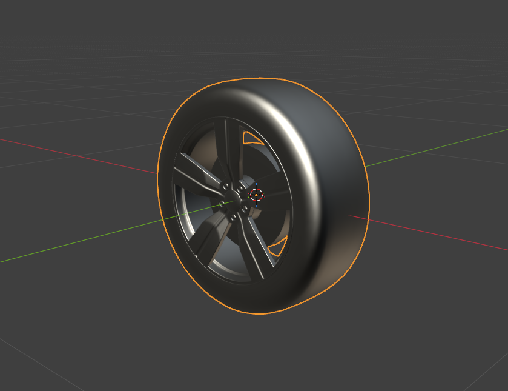
0, 0, 0).Y (колесо катится вдоль оси +X).Body)MyFirstCar/Meshes..fbx-файл кузова из Проводника прямо в окно Content Browser (или нажмите кнопку Import).Generate Missing Collision — ВКЛЮЧИТЬ (если вы не делали собственную UCX_-коллизию в 3D-редакторе; кузову обязательно нужна коллизия для столкновений!).Material Import Method — выберите Do Not Create Material (чтобы UE не создавал несовместимые базовые материалы автоматически).Build Nanite — ВЫКЛЮЧИТЬ (Nanite в проекте отключён).Import Uniform Scale — оставьте 1.0.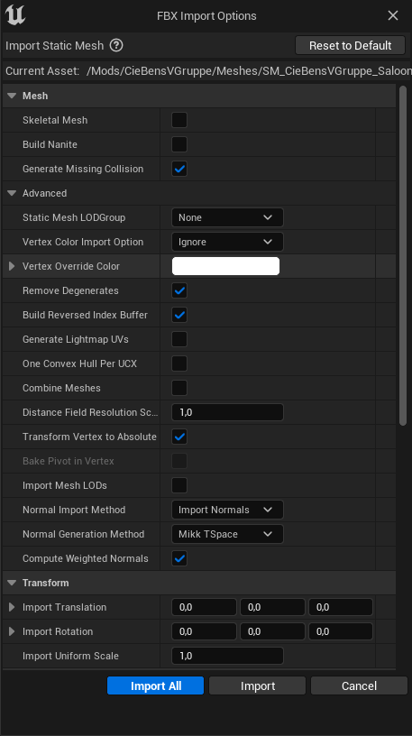
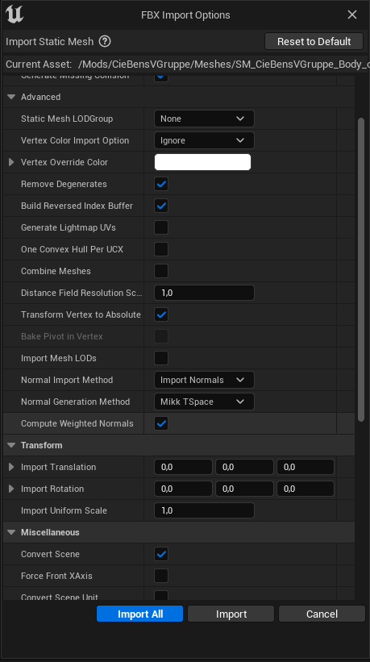
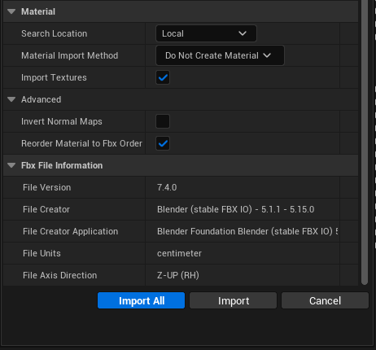
Approx Size. Для обычного легкового авто цифры должны быть порядка 450 × 180 × 150 (в сантиметрах). Если видите 4 × 2 × 1 — модель экспортировалась в 100 раз меньше, вернитесь к Шагу 2.1!Wheel)Импорт колёс выполняется точно так же в папку MyFirstCar/Meshes, но с одним критическим отличием:
Generate Missing Collision — обязательно ВЫКЛЮЧИТЬ! У моделей колёс не должно быть коллизии (физический контакт с дорогой считает система WheelRaycast из VehicleLib).Material Import Method — Do Not Create Material.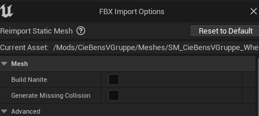
Главное правило материалов в CCD 2.0:
Моды НЕ поддерживают пользовательские Master Materials!
Вы обязаны использовать только Material Instance, созданные на основе подготовленных разработчиками материалов из папки:
Content/Common/MasterMaterials/VehicleMaterials/ModMaterials/
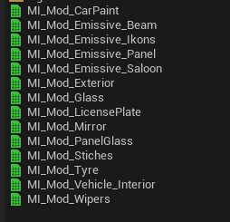
Перетащите текстуры (.png / .tga) в папку MyFirstCar/Textures. Для каждой импортированной текстуры откройте её двойным кликом:
Virtual и поставьте галочку Virtual Texture Streaming. В углу миниатюры текстуры появится метка VT.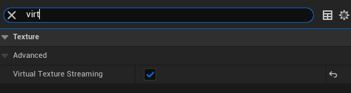
Compression и выберите Compression Settings = Masks (no sRGB).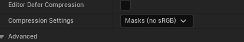
Ctrl + S).Чтобы машина уже выглядела аккуратно, создайте 3 базовых Material Instance:
Content/Common/MasterMaterials/VehicleMaterials/ModMaterials/.MyFirstCar/Materials/:
MI_Mod_CarPaint → MI_MyFirstCar_Paint (окрашенный кузов — можно просто задать цвет даже без текстур!).MI_Mod_Exterior → MI_MyFirstCar_Exterior (пластик, металл, диски колёс).MI_Mod_Tyre → MI_MyFirstCar_Tyre (покрышки колёс).MI_* двойным кликом, поставьте галочки слева от нужных параметров (цвет / текстуры), выберите свои текстуры и нажмите Save.MI_* в соответствующие слоты. Нажмите Save.(Подробный разбор всех 14 материалов MI_Mod_*, ливрей, стёкол и фар — в Модуле 2 и Модуле 3.)
V_MyFirstCar)Актор автомобиля — это Blueprint-контейнер, в котором собираются кузов, колёса и камеры.
Запомните 3 базовых правила (они действуют во всех модулях):
(1.0, 1.0, 1.0) у самого Актора и всех его компонентов.Body) выставляйте Collision Presets = NoCollision и снимайте галочку Receives Decals (по умолчанию выключено).Body) Location и Rotation остаются (0, 0, 0), если в инструкции явно не указано иное. К любому узлу можно прикрепить свои дополнительные декоративные меши (с NoCollision и любым нужным Transform).Plugins/Mods Content/MyFirstCar/.V_MyFirstCar и откройте его двойным кликом.Body)+ Add → введите Static Mesh → выберите Static Mesh.Body (регистр важен!). Убедитесь, что он прикреплён к DefaultSceneRoot, а его Location и Rotation равны (0, 0, 0).Body и в панели Details справа настройте:
BlockAllDynamic.Mass (kg) (Override Mass) и укажите подрессоренную массу кузова в килограммах (масса автомобиля минус масса 4 колёс; для обычного седана это примерно 1200–1500 кг, для минивэна — 2100 кг).(X, Y, Z) от геометрического центра коллизии. Для первого теста можно оставить (0, 0, 0) или слегка опустить по Z (например, Z = -20), чтобы машина была устойчивее. (Точная формула расчёта развесовки приведена в VehicleLib_HTML/00_Quick_Start.html.)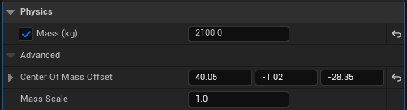
Wheel*)Задняя ось в стандартных схемах называется Back, а НЕ Rear!
Используйте строго эти 4 имени:
WheelFrontLeft — переднее левоеWheelFrontRight — переднее правоеWheelBackLeft — заднее левоеWheelBackRight — заднее правоеВ Модуле 1 (без суппортов подвески) колёса крепятся напрямую к Body:
Body, нажмите + Add → Static Mesh и назовите его WheelFrontLeft.Collision Presets = NoCollision и отключите Receives Decals.Mount в Vehicle.ini; подробнее в Шаге 5).WheelFrontRight, WheelBackLeft, WheelBackRight.(Если позже вы добавите неподвижные суппорты подвески SuspensionFrontLeft/Right/BackLeft/Right в Модуле 2, то координаты Location перенесутся на них, а у дочерних Wheel* станет Location = (0, 0, 0).)
flowchart TD
Root["DefaultSceneRoot<br/>Scale = (1, 1, 1)"] --> Body["Body (StaticMeshComponent)<br/>Collision: BlockAllDynamic<br/>Mass (kg) + Center Of Mass Offset"]
Body --> WFL["WheelFrontLeft<br/>NoCollision, Location = Mount (см)"]
Body --> WFR["WheelFrontRight<br/>NoCollision, Location = Mount (см)"]
Body --> WBL["WheelBackLeft<br/>NoCollision, Location = Mount (см)"]
Body --> WBR["WheelBackRight<br/>NoCollision, Location = Mount (см)"]
Root --> Cam["ThirdPersonBack (SceneComponent)<br/>ControlBlock: Camera"]
ControlBlock и добавление базовой камеры (ThirdPersonBack)Чтобы в игре вы видели свой автомобиль со стороны под удобным ракурсом, добавим одну базовую камеру третьего лица и заодно освоим главный механизм настройки компонентов — ControlBlock.
А что с остальными камерами (FirstPerson, Windshield, ThirdPersonFront, TopDown)?
Все остальные камеры, которые вы пока не создали вручную, в игре всё равно будут доступны, но расположатся в стандартных точках по умолчанию — они могут не совсем подходить под габариты вашего конкретного автомобиля. Точно расставить все 5 камер под свой кузов вы сможете в Модуле 3.
DefaultSceneRoot → нажмите + Add → Scene (создастся SceneComponent). Назовите его Cam_ThirdPersonBack.X = 0, Y = 0, Z = 130 см).ControlBlock (запомните эту последовательность — она используется по всему руководству):
Cam_ThirdPersonBack, в панели Details справа в строке поиска введите Asset User Data.Asset User Data нажмите + → в появившемся слоте Index [0] выберите из списка Control Asset Data.Index [0] → напротив Control Blocks нажмите +.Camera. В правом выпадающем списке убедитесь, что выбрано Control Block.Camera → напротив Properties нажмите + два раза, чтобы добавить 2 свойства:
Type → тип справа: Control Property String → раскройте и в Value напишите ThirdPersonBack.ArmLength → тип справа: Control Property Float → раскройте и в Value напишите дистанцию в сантиметрах, например 600.0. (На скриншоте ниже указано старое написание с опечаткой, но в актуальной версии используется правильное имя ArmLength.)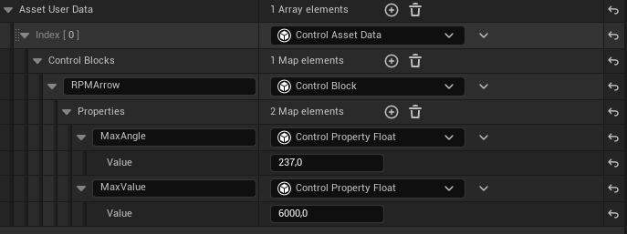

Cam_ThirdPersonBack должен автоматически подсветиться зелёным!Vehicle.iniОткройте Plugins\Mods\Content\MyFirstCar\Vehicle.ini и синхронизируйте геометрию вашего 3D-автомобиля с физикой (все единицы в Vehicle.ini — в метрах, тогда как в Unreal Engine — в сантиметрах!):
Location (UE) → Mount (Vehicle.ini)Правило перевода координат из UE в Vehicle.ini:
X, Y, Z на 100 (перевод из сантиметров в метры).Y! В UE левая сторона автомобиля имеет отрицательный Y (Y < 0), а в Vehicle.ini левые колёса имеют положительный Y (Y > 0), правые — отрицательный Y (Y < 0).Пример для переднего левого колеса:
Location узла WheelFrontLeft / SuspensionFrontLeft): X = 163 см, Y = -85 см, Z = 44.55 см (положение при максимально прожатой подвеске).Vehicle.ini:[SuspensionFrontLeft]
Length = 0.20
Mount = 1.63; 0.85; 0.4455Как связаны Mount.Z, Length и положение колеса в покое?
В статике автомобиль просаживается под собственным весом примерно на треть хода подвески (NormalSag = 0.33).
Если вы знаете желаемый центр колёсной арки в спокойном состоянии (X_см, Y_см, Z_см), то верхняя точка сжатой стойки Mount.Z вычисляется по формуле из VehicleLib:
Mount.Z = (Z_см / 100) + (1 - 0.33) * Length
Например, при центре арки Z = 31 см и ходе подвески Length = 0.20 м: Mount.Z = 0.31 + 0.67 * 0.20 = 0.444 м (44.4 см в UE).
Пропишите корректные Mount и Length для всех четырёх секций:
[SuspensionFrontLeft] (Y > 0)[SuspensionFrontRight] (Y < 0)[SuspensionBackLeft] (Y > 0)[SuspensionBackRight] (Y < 0)[WheelFrontLeft], [WheelFrontRight], [WheelBackLeft], [WheelBackRight] укажите радиус вашего колеса в метрах (измерьте диаметр 3D-меша колеса, поделите пополам и вычтите ~1 см на прогиб шины под весом авто):[WheelFrontLeft]
Radius = 0.345[Steering] укажите расстояние между передней и задней осью в метрах:[Steering]
InteraxleDistance = 2.75 ; = (MountFront.X - MountBack.X)(Когда машина уверенно поедет, для точной настройки жёсткости пружин, двигателя Engine.csv и КПП воспользуйтесь руководством VehicleLib_HTML/00_Quick_Start.html.)
PDA_PrototypedVehicleSpecification)Чтобы игра увидела ваш автомобиль и показала его в списке выбора машин, нужен специальный Data Asset.
MyFirstCar/.
PDA_PrototypedVehicleSpecification → нажмите Select.
DA_MyFirstCar и откройте его двойным кликом.Prototype: выберите ваш Blueprint Актора V_MyFirstCar.Prototype Version: укажите 1 (версия загрузчика автомобиля).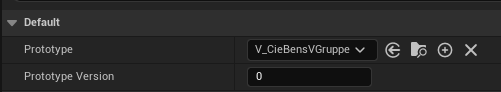
Name: отображаемое название автомобиля в игре (можно писать текст напрямую, String Table создавать не обязательно).Image: превью-картинка автомобиля для меню (импортируйте любую .png картинку в Textures/ с включённым Virtual Texture или временно выберите существующую из шаблона).Class: выберите класс автомобиля из выпадающего списка (например, Economy).Engine Types: нажмите +, чтобы добавить минимум один тип двигателя — это поле обязательно, так как именно оно определяет тип топлива (Fuel Type: Gasoline, Diesel и т. д.).Transmission Types: желательно сразу добавить два варианта — Automatic и Manual — и привязать их к options.xml:
Index [0] (Automatic): поставьте галочку Bound to Option, впишите Option Name = TransmissionType, Option Value = Auto.Index [1] (Manual): поставьте галочку Bound to Option, впишите Option Name = TransmissionType, Option Value = Manual.Option Name и Option Value должны символ в символ совпадать с полями в вашем options.xml!
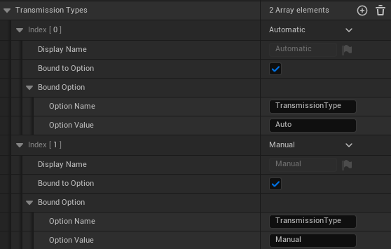
Ctrl + Shift + S) в редакторе UE..pak, локальный тест и публикация в Steam Workshop.pakCCD2_VehicleKit найдите и запустите двойным кликом скрипт build_mod_dlc.bat.DLC build successful: ...\Saved\DLC\Windows\Mods.pak(Эталонный автомобиль CieBensVGruppe помечен специальным игнор-лейблом L_IGNORE и в ваш .pak не попадёт.)
\Saved\DLC\Windows\, найдите файл Mods.pak и переименуйте его по имени вашего мода, например MyFirstCar.pak.MyFirstCar.pak в папку с установленной игрой:
<Папка установки игры>\CityCarDriving2\Content\Paks\Перед тем как переходить к красоте (экстерьеру, салону и звукам), убедитесь, что база работает идеально:
Y инвертирован верно).ThirdPersonBack) вращается вокруг центра машины на комфортном расстоянии.Body.Когда мод проверен и готов к публикации для других игроков, воспользуйтесь официальной инструкцией по загрузке в Steam Workshop (пункт 4):
Поздравляем — ваш первый автомобиль уже ездит в CCD 2.0!
Следующий шаг: переходите к Модулю 2. Экстерьер, оптика, подвеска и взаимодействие с миром, чтобы добавить суппорты, фары, реальные источники света, номера, заправку и взаимодействие с миром.